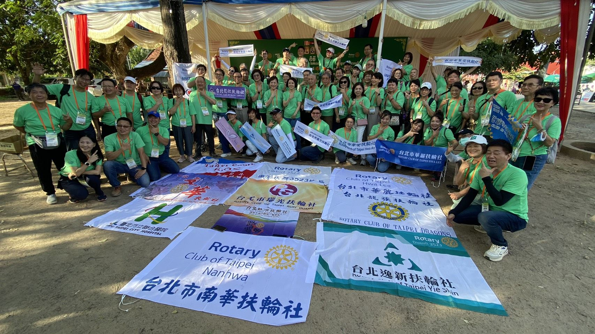
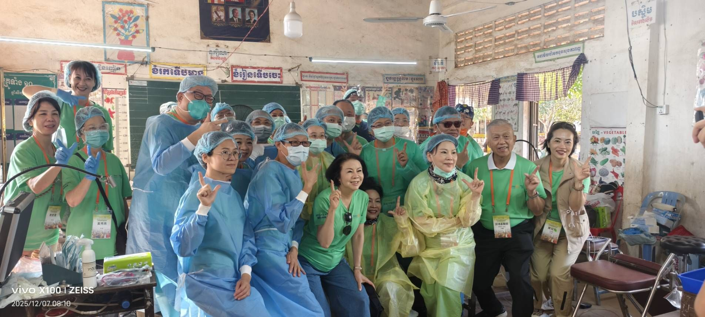
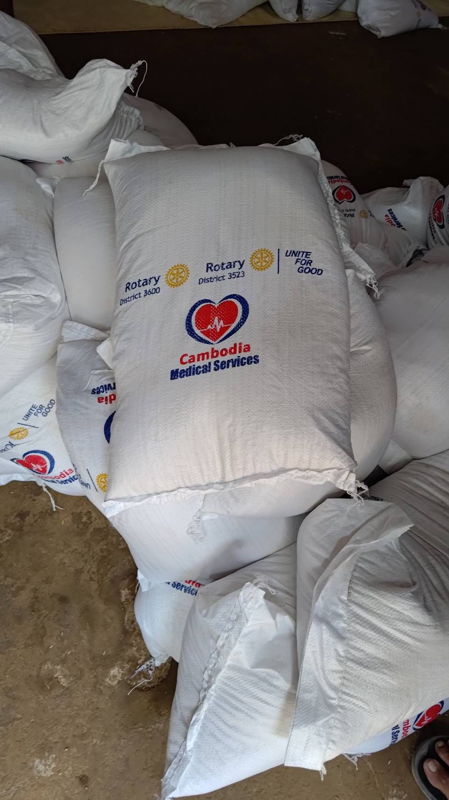
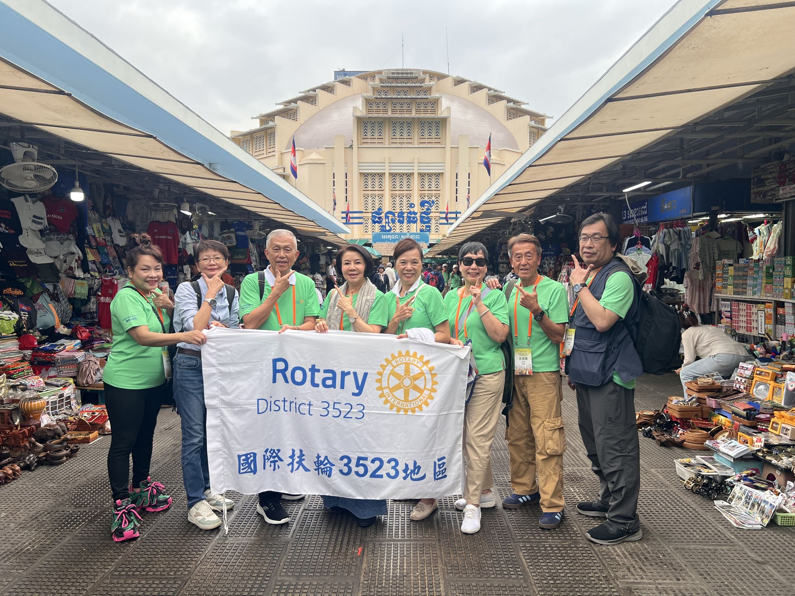
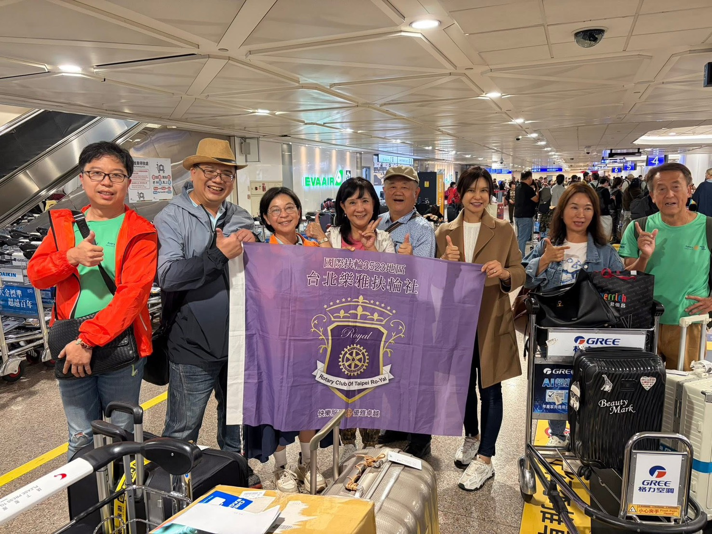
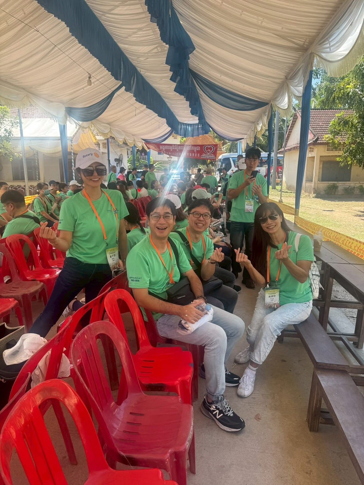
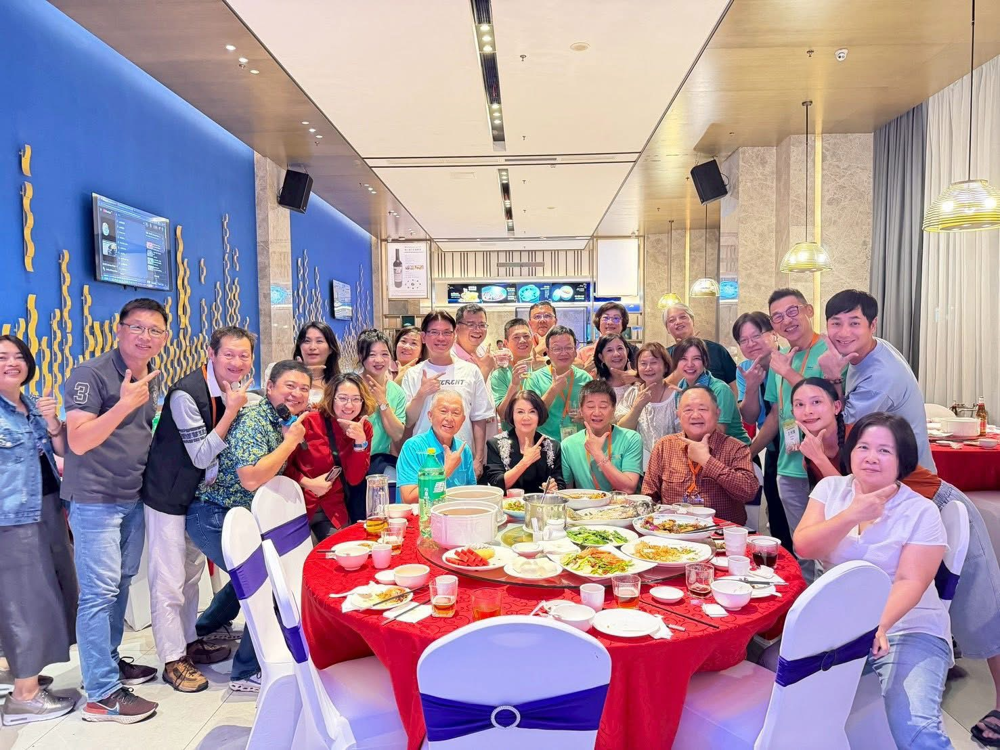
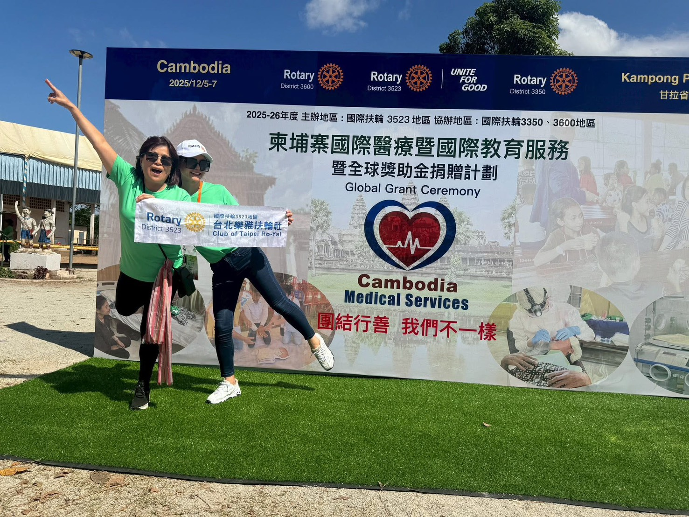
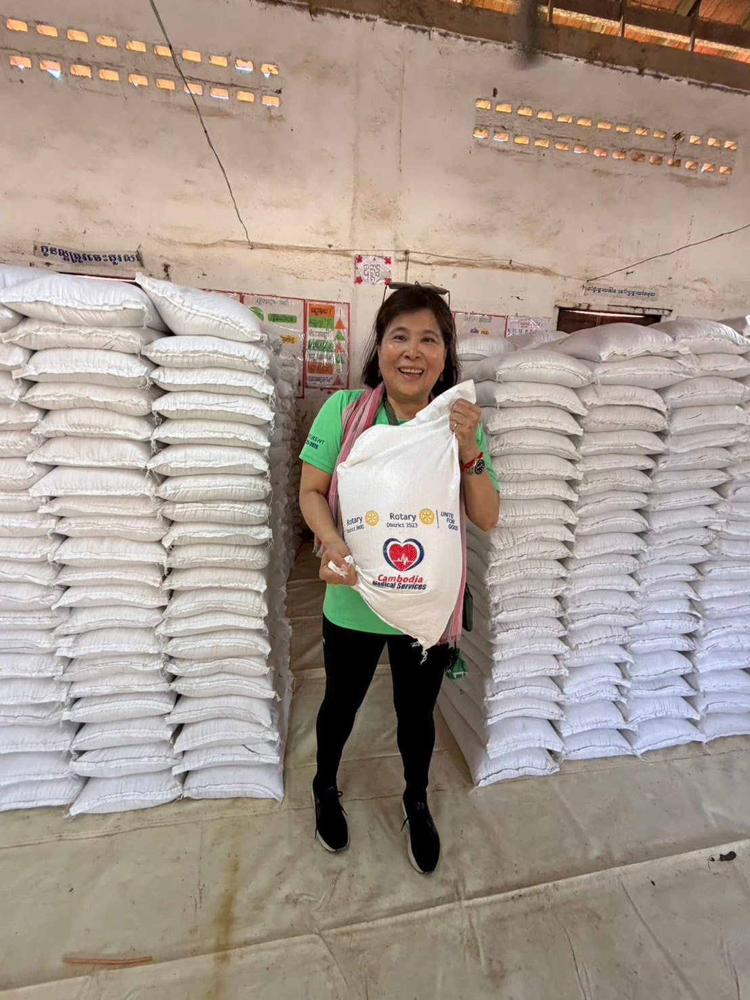

我非常感恩能參與國際扶輪3523地區，攜手柬埔寨當地扶輪社及韓國3600地區，於2025年12月共同推動的柬埔寨偏鄉醫療義診服務計畫。這不僅是一場國際醫療服務，更是一段讓我重新看世界、也重新看見自己的旅程。透過這次行動，我親眼見證扶輪七大焦點領域中「疾病預防與治療」與「母嬰健康」如何在偏鄉落實，也深刻體會到「團結行善」的真正意義。
我們深入資源極度匱乏的柬埔寨甘丹省（Kandal Province) Leuk Deak 區（Leuk Deak District)的一個村/ 聚落，借用一所簡陋學校作為臨時診療空間。斑駁的牆面、泥土地板、坑洞滿布的教室，物資延誤抵達、臨時斷電……許多突發狀況都不在原計畫中，但醫療團隊與志工沒有一句抱怨，大家唯有一個共同目標：把眼前的每件事做到最好。兩天義診，我們服務了1,950位居民，醫療與照護服務更高達8,507人次。內科、骨科、婦產科、兒科、耳鼻喉科、眼科、牙科、中醫、皮膚科、超音波檢查、藥局給藥及CPR訓練全面投入，每位病人可接受兩科以上診療。這些數字背後，是一個個被傾聽、被接住的生命故事。也是這次義診Jenny 總監不斷強調的守護每個人基本的健康是扶輪公益的目的。
義診期間，醫師與志工們遇見了許多令人難忘的小故事：有人為多名白內障長者配眼鏡，有人為忍痛多年的病患處理傷口，也有人耐心攙扶行動不便村民前行。有人此次最大的收獲，就是教了超過二百人次的小朋友用“安妮”作CPR～雖然累到全身酸痛心中卻充滿無限喜悅。每天結束後，大家在休息與閒聊中分享當天所見所感那些感動在交流中被放大，也讓扶輪社友之間的情誼更加緊密。
我在藥局幫忙，當我親手將藥品交到村民手中，看見他們露出的笑容，心中感動不已，更清楚身在台灣的幸福快樂與自己的富足。這趟義診，不只是付出，更是深刻的成長。直擊偏鄉的匱乏，也讓我更加謙卑，珍惜當下此外，國際扶輪還發放10公斤白米給1,950位居民，永豐金控捐贈4,000件T-shirt，讓醫療之外的基本生活支持，也能即時送到最需要的人手中。
再次的衷心感謝D3523總監Jenny的帶領、籌備團隊的用心，以及所有醫師、護理人員、志工與捐助單位的無私付出。因為大家「團結行善、親手服務」，讓這次義診圓滿完成，也在我心中留下深刻而長久的感動。我相信，這份感動不只改變了被服務的人，也深深影響了每一位參與其中的人，這段回憶將永遠伴隨我走過往後的人生旅程。我愛扶輪 謝謝有一群扶輪人同行 我們方能走的更遠走的更久 。








